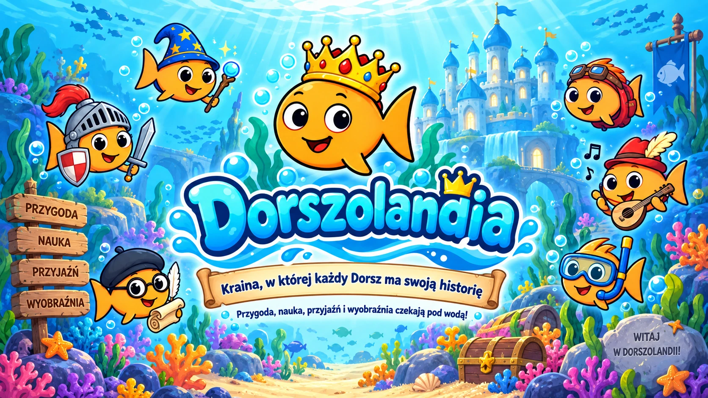
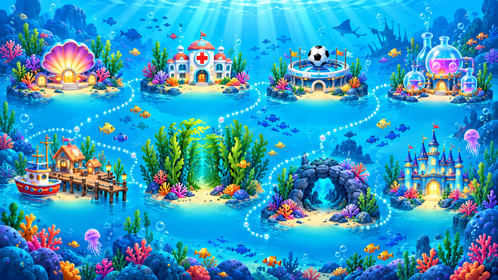
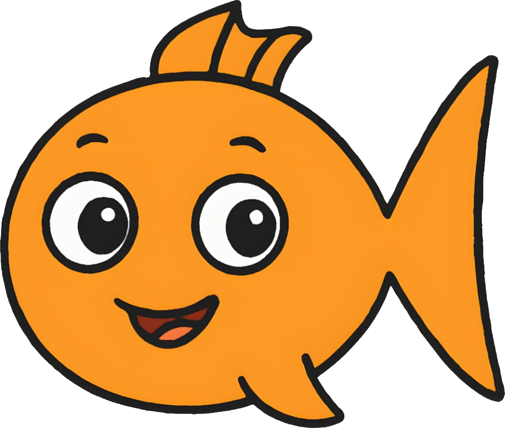

Teledysk

Jedna kraina, wiele dróg
Odkrywaj Dorszolandię
Wybierz, dokąd dziś płyniesz: do mieszkańców miasta, na królewski dwór albo na mapę pełną miejsc i misji.
Mieszkańcy miasta
Każda ryba ma talent
Poznawaj zawody, zainteresowania i małe codzienne supermoce.
Zamek Dorszolandii
Dwór Króla Dorsza
Pełny dwór to 18 średniowiecznych ryb. Każda ma własną rolę w pałacu i w opowieściach krainy.
Podwodna mapa
Miejsca i misje
Kliknij punkt na mapie albo odkryj propozycję wyprawy.

Zabawa pod wodą
Gry i zagadki
Sześć krótkich gier — bez logowania, gotowych od razu do zabawy.
Twoja wyobraźnia prowadzi
Stwórz własnego Dorsza
Wybierz rekwizyt, kliknij go na planszy i ustaw rozmiar, obrót oraz położenie. Każdy dodatek jest osobnym plikiem, więc kolejne można bezpiecznie dopisywać do katalogu.

Mój Dorsz
Biblioteka Dorszolandii
Pełne opowieści Borysa i Dorszusia
Wszystkie historie są pełnymi tekstami z dokumentu źródłowego. W czytniku dzielimy je tylko na wygodne części do czytania — nie skracamy ani nie zmieniamy treści.
Melodie miasta
Muzyka i teledysk
Nagrania są umieszczone bezpośrednio na stronie.
Piosenki
Posłuchaj pod wodą
Kolekcja Dorszolandii
Sklep przygotowany na premierę
Katalog produktów jest gotowy. Płatności i zamówienia nie są jeszcze uruchomione, dlatego strona nie udaje działającego sklepu.